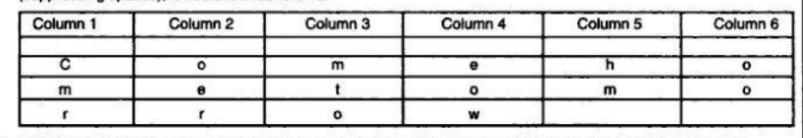

보안 개요
보안의 3개요 CIA
- Confidentiality (C) 기밀유지: 데이터는 통신의 비참가자들에 대해서 비밀성이 보장되어야한다.
- Integrity (I) 청렴성: 데이터가 통신 중간에 수정되거나 변조되는 것을 막아야한다.
- Availability (A) 가용성: 시스템은 데이터에 대해 접근이 가능한 것을 유지해아한다.
해킹의 두 가지 기법 스푸핑과 스니핑의 차이
- 스니핑 : 해킹하고자 하는 네트워크에 대해서 듣는것, 즉 어떤 취약점이 있는지 어떤 데이터가 오고 가는지에 대해 훔쳐 보는 것이다.
- 스푸핑 : 해킹하려고 직접 낚시 메일이나 그런 것들을 사용자에게 보내는 것.
Cryptography 암호화
암호화는 인코딩된 메세지를 접근 할수 없게 만드는 것에 의해 보안을 유지시키는 하나의 예술 행위임.
암호화 관련된용어들
- Plain text(clear text) : 할머니 할아버지 유치원 생 멍멍이 등 아무나 다 이해할 수있는 평문의 텍스트임.
- Cipher text : 플레인 텍스트를 적절한 스키마를 통과시켜 인코딩한 요상한 텍스트들임.
암호학을 위한 변형의 기술들
- Substitution (치환): 플레인 텍스트나 텍스트 블럭들을 대응되는 사이퍼 텍스트로 치환 시키는 것임.
- Transposition(전치) : 플레인 텍스트에 대해서 규칙을 두어 바꿔치기하는것 (예를 들어 몇칸 떨어진 알파벳으로 바꾼다 등을 이용)
- 사이퍼 텍스트 생성 = 전치+ 치환
Substitution (치환) 공격 기술
- Caesar cipher : 플레인 텍스트를 몇칸 떨어진 룰을 정해서 치환함 -- 뚫기 개쉬움 알파벳을 뚫는다 가정하면 a-z까지 26만큼의 소트를 돌려보면서, 의미있는 단어가 나오는지 비교해서 찿으면 둟린다.
- Modified Caesar : Caesar의 단점을 보안해서 각 알파벳을 예를들어 a를 치환한다하면 B-Z중에 하나를 랜덤으로 뽑아서 치환함 역시 소트 돌려보면 뚫림.
Transposition (전치) 공격 기술
- Rail Fence : 플레인텍스트를 입력받음, come home 이런식으로 받으면 홀짝 나눠서 cmhmoeoe 이렇게 순서를 뒤바꿈
- Columnar Transposition : 테이블을 만들어서 다음과 같이 플레인 텍스트를 넣음
특정 순서를 정함 예를들어 4 6 1 2 3 이런식으로 순서를 정해서 컬럼들의 순서를 바꾸고, 다시 처음부터 읽으면 완전히 다른 문자가 된다. 이과정을 여러번하면 이 규칙을 모르는한 찿기 힘듬.
암호화화 복호화( Encryption and Decryption)
동기 비동기 두가지 방식이 있음
- Symmetric key crypto(동기) : 통신하는 사용자가 하나의 키를 공유해서 암호화 하거나 복호화하는데 사용됨.
-
Asymmetric key crypto: two keys(비동기) : 통신하는 두 사용자에 대해서 하나의 공개키와 비공개키를 가지는데 이 공개키로 암호화하고 받는 쪽의 비공개키로 복호화를 함.
Symmetric Key Cryptography (동기 키의 암호화)
동기 비동기 두가지 방식이 있음
- Symmetric key crypto(동기) : 통신하는 사용자가 하나의 키를 공유해서 암호화 하거나 복호화하는데 사용됨.
-
Asymmetric key crypto: two keys(비동기) : 통신하는 두 사용자에 대해서 하나의 공개키와 비공개키를 가지는데 이 공개키로 암호화하고 받는 쪽의 비공개키로 복호화를 함.